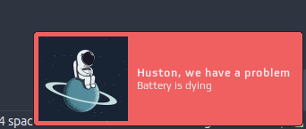

This widget is more informative version of battery widget.
Depending of the battery status it could look following ways:
If a battery level is low then warning popup will show up:

It is possible to customize widget by providing a table with all or some of the following config parameters:
| Name | Default | Description |
|---|---|---|
font |
Play 6 | Font |
arc_thickness |
2 | Thickness of the arc |
show_current_level |
false | Show current charge level |
size |
18 | Size of the widget |
timeout |
10 | How often in seconds the widget refreshes |
main_color |
beautiful.fg_color |
Color of the text with the current charge level and the arc |
bg_color |
#ffffff11 |
Color of the charge level background |
low_level_color |
#e53935 |
Arc color when battery charge is less that 15% |
medium_level_color |
#c0ca33 |
Arc color when battery charge is between 15% and 40% |
charging_color |
#43a047 |
Color of the circle inside the arc when charging |
warning_msg_title |
Huston, we have a problem | Title of the warning popup |
warning_msg_text |
Battery is dying | Text of the warning popup |
warning_msg_position |
bottom_right |
Position of the warning popup |
warning_msg_icon |
~/.config/awesome/awesome-wm-widgets/batteryarc-widget/spaceman.jpg | Icon of the warning popup |
enable_battery_warning |
true |
Display low battery warning |
show_notification_mode |
on_hover |
How to trigger a notification with the battery status: on_hover, on_click or off |
This widget requires the acpi command to be available to retrieve battery and
power information.
Clone repo, include widget and use it in rc.lua:
local batteryarc_widget = require("awesome-wm-widgets.batteryarc-widget.batteryarc")
...
s.mytasklist, -- Middle widget
{ -- Right widgets
layout = wibox.layout.fixed.horizontal,
...
--[[default]]
batteryarc_widget(),
--[[or customized]]
batteryarc_widget({
show_current_level = true,
arc_thickness = 1,
}),
}
...
In case of any doubts or questions please raise an issue.